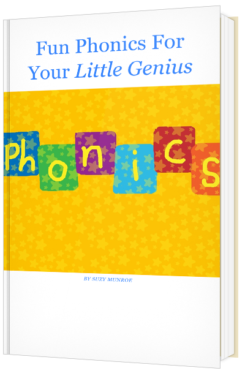

Print it out and have fun spelling words with your little genius.
Download Free Activity Worksheet
Help me promote my Phonics Newsletter with your friends, especially with those who have young kids.
Any feedback or problems please email suzy@teachersuzy.com